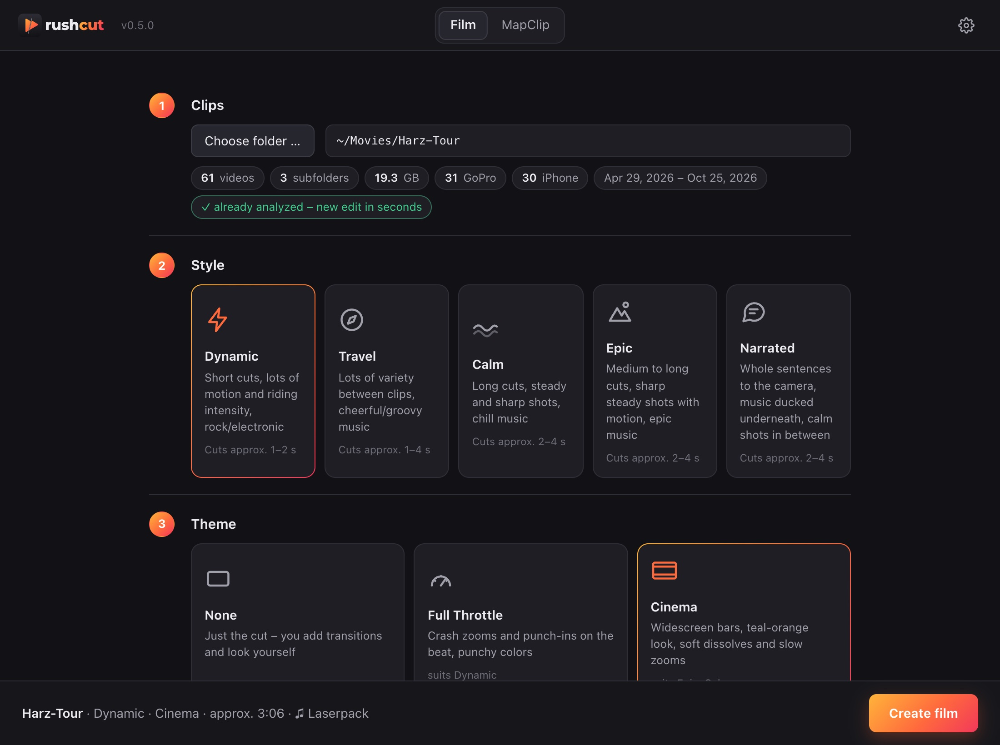
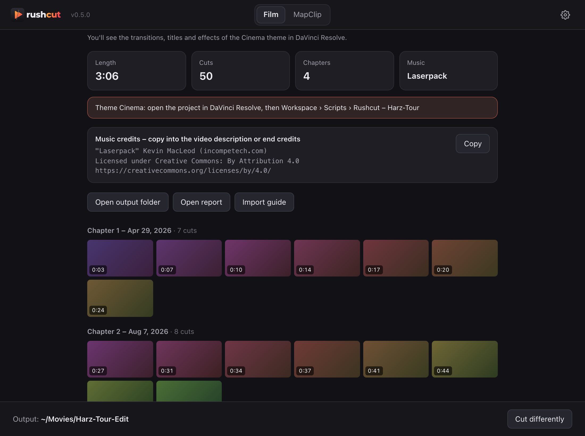
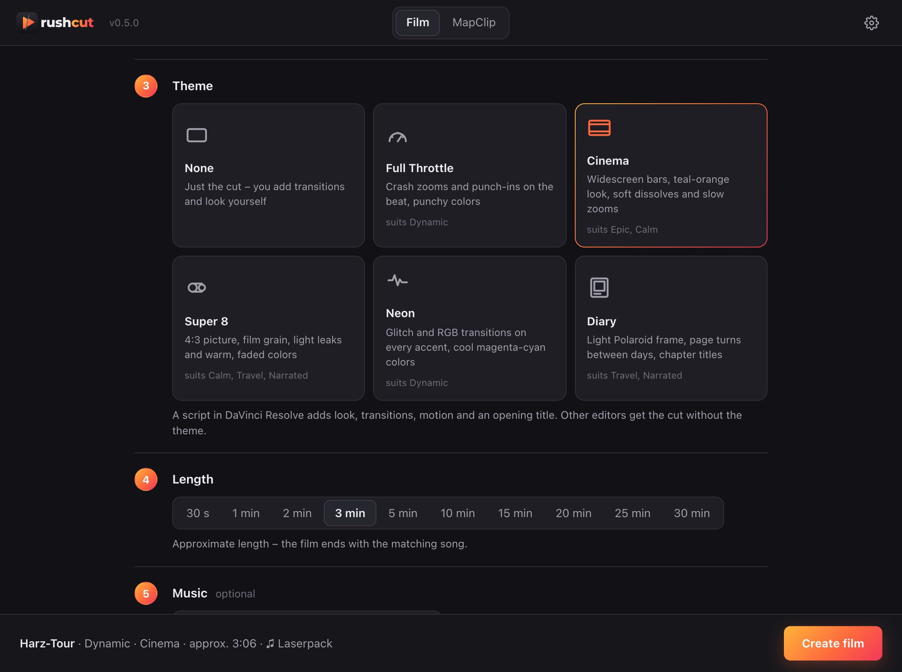
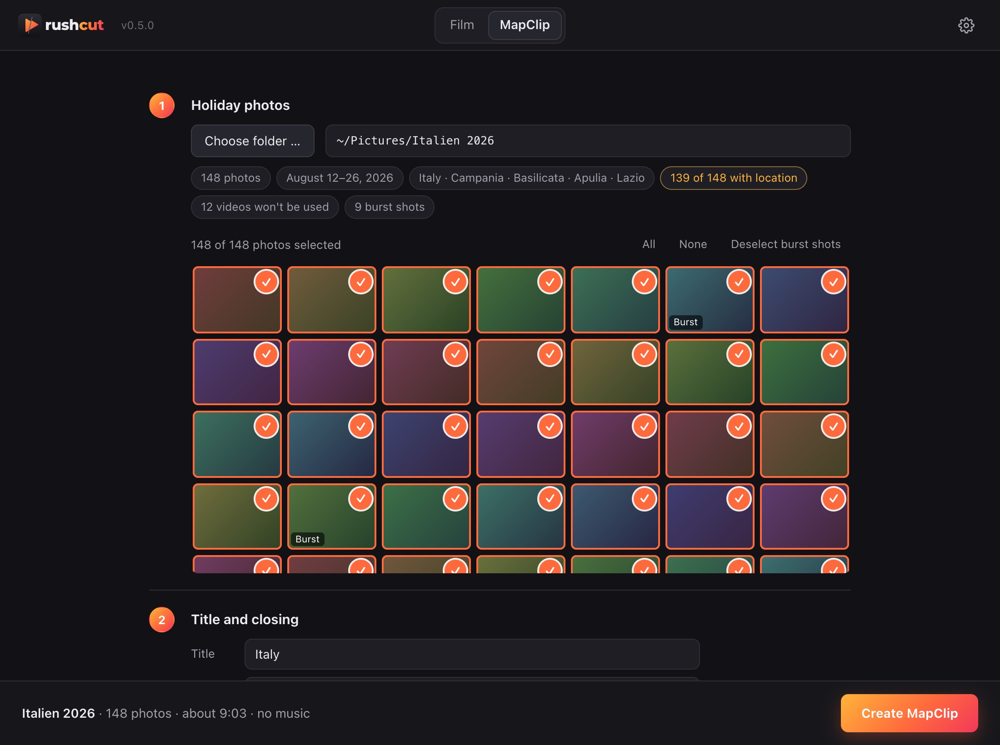

Raw footage becomes a suggested edit – locally, in minutes.
GoPro and phone clips in, a ready timeline for DaVinci Resolve, Filmora and EDIUS out. Not a finished video like Quik, but a rough cut you keep editing in your own software.
macOS 15+ & Windows 10/11 · no uploads · no account · everything in one package

What Rushcut does
Stop spending evenings scrubbing through footage.
Rushcut watches all of your footage, picks the best scenes and lays them on the beat – originals stay untouched, and the result is a timeline you keep editing.
Read clips
One folder including all subfolders – GoPro, iPhone, Android. Originals are never changed.
Rate scenes
Motion, sharpness, exposure, shake and audio – every scene gets a score.
Detect speech
“Narrated” style: whoever talks to the camera stays in until the last word – the music is ducked underneath.
Use GoPro sensor data
Riding intensity, GPS speed, HiLight tags, face detection (selfies are left out); upside-down cameras are rotated.
Cut to the beat
Chapters per recording day, cut length depending on style and motion. 30 royalty-free songs built in, or your own music.
Themes for DaVinci Resolve
Full Throttle, Cinema, Super 8, Neon, Diary – a script in Resolve adds look, transitions and titles.
Write a timeline
FCP7 XML and EDL with linked original clips, music, chapter markers, a report – and a preview video.
MapClip
Holiday photos become a slideshow with a street map, route and a map flight between places.
How it works
Six steps to a film
One window, six decisions. When the film is ready you hear a short ping.
- 1
Clips
Choose a folder or drop it onto the window – subfolders are included.
- 2
Style
Dynamic, Travel, Calm, Epic or Narrated – sets cut length, shot selection and music.
- 3
Theme
None or one of five looks for DaVinci Resolve – previewed with your own footage.
- 4
Length
30 seconds to 30 minutes. With music, the film ends with the song.
- 5
Music
None, matching the style or your own song. Listen with ▶, “Other song” picks the next one.
- 6
Output
Choose a target folder – everything for further editing in one place.
The result
A timeline, not a finished video
The output folder contains the timeline as XML and EDL, the songs used, a report, import instructions and a small preview video you can play right in the app. Clips are linked – you keep editing with the originals.
V1videoA1original audio, lowered and linked to V1 – speech at full level in the “Narrated” styleA2music, ducked automatically under speech◆one marker per chapter

| Software | Import | Status |
|---|---|---|
| DaVinci Resolve | File → Import → Timeline → <Film>.xml – with a theme also Workspace → Scripts → Rushcut | ✓ tested |
| Filmora | File → Import Media → Import Timeline XML | ✓ tested |
| EDIUS 11 Pro | Project with the preset from README.txt, then File → Import Project → FCP XML | ✓ tested |

Themes for DaVinci Resolve
A look in one click – and everything stays editable
With a theme, Rushcut puts a script into Resolve’s menu. Open a project, choose Workspace → Scripts → Rushcut – <Film>: the script builds a new timeline with color look, transitions, motion, bars, overlays and an opening title. Every effect sits in the timeline on its own.
Works in the free version of Resolve too (tested with Resolve 21). Filmora and EDIUS get the cut without the theme.
Full Throttle
Crash zooms and punch-ins on accented beats, punchy colors, light flashes.
Cinema
2.39:1 widescreen bars, teal-orange look, soft dissolves, slow zooms.
Super 8
4:3 with film grain and light leaks, warm, faded colors.
Neon
Glitch and RGB split on every accent, cool magenta-cyan.
Diary
Light Polaroid frame, page turns between days, chapter titles.
MapClip · travel diary
Holiday photos become a film with a map
Film | MapClip at the top of the app switches modes. A folder of photos (JPG, HEIC, PNG) becomes a slideshow with slow zooms, soft dissolves and, if you like, music on the beat. You pick the photos in a grid.
- Street map in the corner: where the photo was taken, with pin, route and place names
- Map flight full-screen at every change of place
- Title and dates suggested from the photos – country, regions, travel dates
- Video and timeline: a finished 1920×1080 MP4 to share, plus an XML to keep editing
About 40 photos are done in roughly a minute. Place and date come from the photos themselves (GPS, capture time).

Download
Download, install, go
Both packages include everything – Python, ffmpeg and music. Nothing else needs to be installed.
macOS
macOS 15 or later, Apple Silicon
Download Rushcut.dmgDrag the app to “Applications”. Not signed yet: right-click → “Open” on first launch.
Windows
Windows 10 or 11, x64
Download Rushcut-Setup.exeInstalls without admin rights. SmartScreen: “More info” → “Run anyway”.
FAQ
Good to know
Are my videos or photos uploaded anywhere?
No. Rushcut runs entirely on your computer – no uploads, no account, no tracking. Originals are only read, never changed. The one connection to the internet: for the street map in MapClip, Rushcut loads map sections of the places you visited from OpenFreeMap. You can turn that off in the settings – you then get a simple map from bundled data.
How is Rushcut different from GoPro Quik?
Quik delivers a finished video and needs its app and cloud. Rushcut delivers a suggested edit as a timeline you keep editing freely in DaVinci Resolve, Filmora or EDIUS – with the original clips in full quality.
Do I need the paid version of DaVinci Resolve for the themes?
No. The theme script runs in the free version too (tested with Resolve 21). Filmora and EDIUS get the cut without the theme – you add look and transitions there yourself.
Which cameras are supported?
Anything that writes common video files – GoPro, iPhone, Android and others. For GoPro cameras with sensor data (GPMF), Rushcut also uses speed, riding intensity, HiLight tags and orientation.
Can I use the built-in music on YouTube?
Yes. The songs are by Kevin MacLeod (incompetech.com) under CC BY 4.0 – including monetized videos. Rushcut puts the music credits into the output folder; they belong in the video description or end credits.
How long does an edit take?
The first analysis takes a few minutes (about 3 minutes for roughly 20 GB of footage). After that, a new edit with a different style, theme, length or music is ready in about a second. The preview video takes only a few seconds per minute of film.
Which languages does Rushcut speak?
English and German – following the system language, switchable in the settings. That includes the report, instructions and folder names in the output.